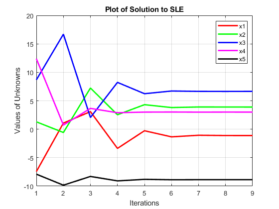
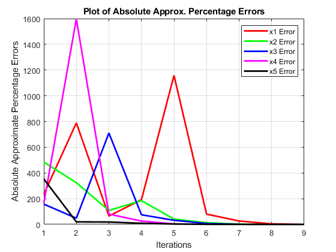
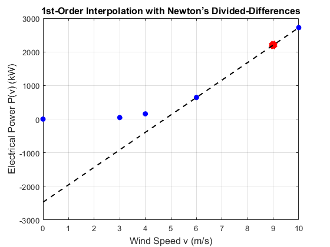
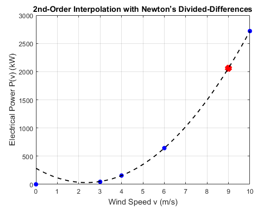
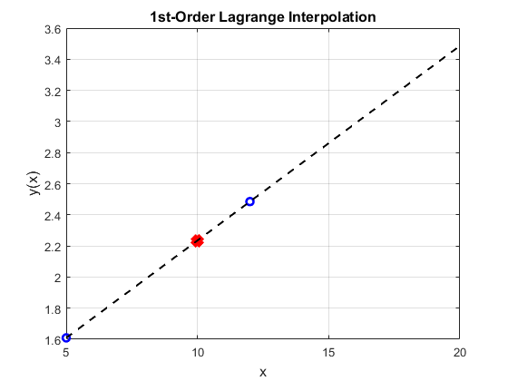
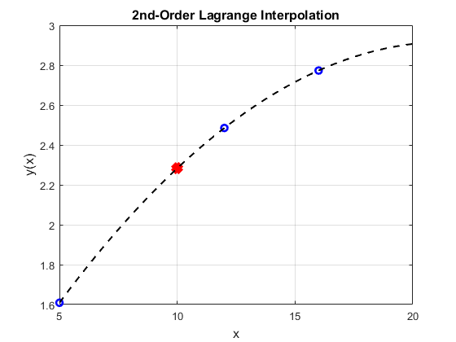
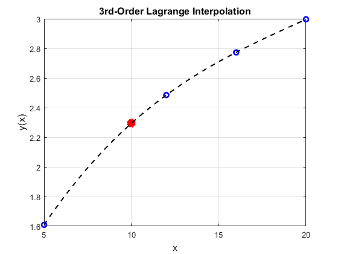
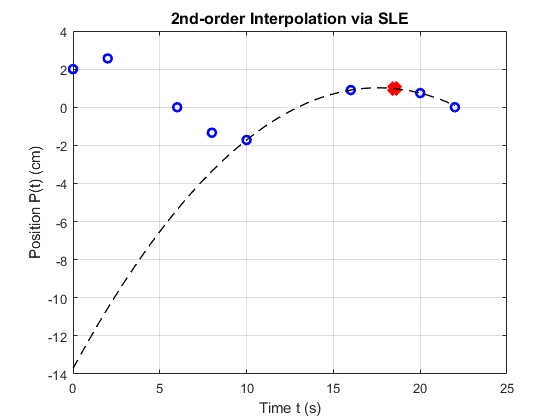
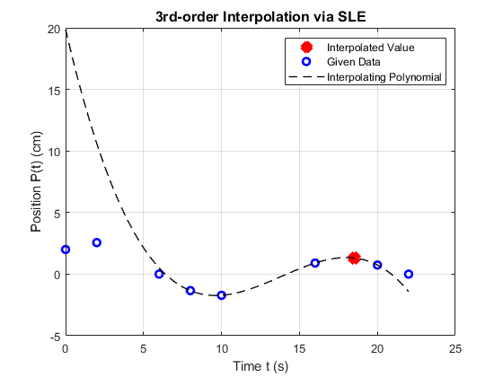
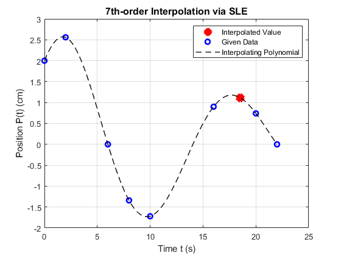

Contents
Laboratory Assignment #2: Systems of Linear Equations and Interpolation
Problem 1.1. Partial Pivoting On a Given SLE
clear
clc
close all
A = [-1 4 2 0 0; 18 4 -6 -2 2; -3 9 6 -3 21; 0 10 -2 5 2; -1 3 0 -6 2];
b = [30; -68; -117; 23; -23];
AM = [A b];
fprintf('Initial Augmented Matrix [A|b]:\n');
disp(AM);
AM([1 2], :) = AM([2 1], :);
fprintf('Swapping row 1 with row 2:\n');
disp(AM);
AM([2 4], :) = AM([4 2], :);
fprintf('Swapping row 2 with row 4:\n');
disp(AM);
AM([4 5], :) = AM([5 4], :);
fprintf('Swapping row 4 with row 5:\n');
disp(AM);
AM([5 3], :) = AM([3 5], :);
fprintf('Swapping row 5 with row 3:\n');
disp(AM);
disp('Final Augmented Matrix after Partial Pivoting:');
disp(AM);
Initial Augmented Matrix [A|b]:
-1 4 2 0 0 30
18 4 -6 -2 2 -68
-3 9 6 -3 21 -117
0 10 -2 5 2 23
-1 3 0 -6 2 -23
Swapping row 1 with row 2:
18 4 -6 -2 2 -68
-1 4 2 0 0 30
-3 9 6 -3 21 -117
0 10 -2 5 2 23
-1 3 0 -6 2 -23
Swapping row 2 with row 4:
18 4 -6 -2 2 -68
0 10 -2 5 2 23
-3 9 6 -3 21 -117
-1 4 2 0 0 30
-1 3 0 -6 2 -23
Swapping row 4 with row 5:
18 4 -6 -2 2 -68
0 10 -2 5 2 23
-3 9 6 -3 21 -117
-1 3 0 -6 2 -23
-1 4 2 0 0 30
Swapping row 5 with row 3:
18 4 -6 -2 2 -68
0 10 -2 5 2 23
-1 4 2 0 0 30
-1 3 0 -6 2 -23
-3 9 6 -3 21 -117
Final Augmented Matrix after Partial Pivoting:
18 4 -6 -2 2 -68
0 10 -2 5 2 23
-1 4 2 0 0 30
-1 3 0 -6 2 -23
-3 9 6 -3 21 -117
Problem 1.2. Solution of SLE with the Gauss-Seidel Method
clc
A = AM(:, 1:end-1);
b = AM(:, end);
x = [10; -5; -5; -8; 20];
[m, n] = size(A);
c = zeros(m, n);
d = zeros(m, 1);
ea = 100;
tol = 2;
iter = 1;
x1_vals = [];
x2_vals = [];
x3_vals = [];
x4_vals = [];
x5_vals = [];
x1_errors = [];
x2_errors = [];
x3_errors = [];
x4_errors = [];
x5_errors = [];
while ea > tol
for i = 1:n
d(i) = b(i) / A(i, i);
for j = 1:m
if i == j
c(i, j) = 0;
else
c(i, j) = A(i, j) / A(i, i);
end
end
x_new(i) = d(i) - c(i, :) * x(:);
ea_vect(i) = abs((x_new(i) - x(i)) / x_new(i) * 100);
x(i) = x_new(i);
end
x1_vals = [x1_vals, x(1)];
x2_vals = [x2_vals, x(2)];
x3_vals = [x3_vals, x(3)];
x4_vals = [x4_vals, x(4)];
x5_vals = [x5_vals, x(5)];
x1_errors = [x1_errors, ea_vect(1)];
x2_errors = [x2_errors, ea_vect(2)];
x3_errors = [x3_errors, ea_vect(3)];
x4_errors = [x4_errors, ea_vect(4)];
x5_errors = [x5_errors, ea_vect(5)];
ea = max(ea_vect);
fprintf('Iteration #%d Max EA: %.4f\n', iter, ea)
iter = iter + 1;
end
disp('Final solution vector x:');
disp(x);
Iteration #1 Max EA: 484.6154
Iteration #2 Max EA: 1598.0968
Iteration #3 Max EA: 710.1195
Iteration #4 Max EA: 191.7027
Iteration #5 Max EA: 1157.7084
Iteration #6 Max EA: 80.0327
Iteration #7 Max EA: 26.3332
Iteration #8 Max EA: 4.1930
Iteration #9 Max EA: 0.2165
Final solution vector x:
-1.1115
3.8954
6.6535
3.0099
-8.8707
Problem 1.3. Plot of Solution to SLE
close all
iterations = 1:(iter-1);
figure;
plot(iterations, x1_vals, '-r', 'LineWidth', 2); hold on;
plot(iterations, x2_vals, '-g', 'LineWidth', 2);
plot(iterations, x3_vals, '-b', 'LineWidth', 2);
plot(iterations, x4_vals, '-m', 'LineWidth', 2);
plot(iterations, x5_vals, '-k', 'LineWidth', 2);
xlabel('Iterations');
ylabel('Values of Unknowns');
grid on;
legend('x1', 'x2', 'x3', 'x4', 'x5');
title('Plot of Solution to SLE');
hold off;

Problem 1.4. Plot of Absolute Approx. Percentage Errors
close all
figure;
plot(iterations, x1_errors, '-r', 'LineWidth', 2); hold on;
plot(iterations, x2_errors, '-g', 'LineWidth', 2);
plot(iterations, x3_errors, '-b', 'LineWidth', 2);
plot(iterations, x4_errors, '-m', 'LineWidth', 2);
plot(iterations, x5_errors, '-k', 'LineWidth', 2);
xlabel('Iterations');
ylabel('Absolute Approximate Percentage Errors');
grid on;
legend('x1 Error', 'x2 Error', 'x3 Error', 'x4 Error', 'x5 Error');
title('Plot of Absolute Approx. Percentage Errors');
hold off;

Problem 1.5. Absolute True Percentage Errors
close all
x_true = A \ b;
disp('true x:');
disp(x_true);
true_error_x1 = abs((x_true(1) - x1_vals(end)) / x_true(1)) * 100;
true_error_x2 = abs((x_true(2) - x2_vals(end)) / x_true(2)) * 100;
true_error_x3 = abs((x_true(3) - x3_vals(end)) / x_true(3)) * 100;
true_error_x4 = abs((x_true(4) - x4_vals(end)) / x_true(4)) * 100;
true_error_x5 = abs((x_true(5) - x5_vals(end)) / x_true(5)) * 100;
fprintf('Absolute True Percentage Error for x1: %.4f%%\n', true_error_x1);
fprintf('Absolute True Percentage Error for x2: %.4f%%\n', true_error_x2);
fprintf('Absolute True Percentage Error for x3: %.4f%%\n', true_error_x3);
fprintf('Absolute True Percentage Error for x4: %.4f%%\n', true_error_x4);
fprintf('Absolute True Percentage Error for x5: %.4f%%\n', true_error_x5);
true x:
-1.1077
3.8986
6.6490
3.0105
-8.8701
Absolute True Percentage Error for x1: 0.3400%
Absolute True Percentage Error for x2: 0.0822%
Absolute True Percentage Error for x3: 0.0680%
Absolute True Percentage Error for x4: 0.0219%
Absolute True Percentage Error for x5: 0.0062%
Problem 2.1 1st-Order Interpolation with Newton’s Divided-Differences
clear
clc
close all
v = [0, 3, 4, 6, 10];
P = [0, 45, 156, 643, 2720];
b0 = P(4);
b1 = (P(5) - b0) / (v(5) - v(4));
v_est = 9;
P_est = b0 + b1 * (v_est - v(4));
fprintf('Estimated Power at v = %.2f m/s using 1st-order interpolation: %.2f kW\n', v_est, P_est);
figure;
plot(v, P, 'o', 'MarkerEdgeColor', 'b', 'MarkerFaceColor', 'b'); hold on;
plot(v_est, P_est, 'xr', 'LineWidth', 10);
v_full = linspace(0, 10, 100);
P_interp = b0 + b1 * (v_full - v(4));
plot(v_full, P_interp, '--k', 'LineWidth', 1.5);
xlabel('Wind Speed v (m/s)', 'FontSize', 12);
ylabel('Electrical Power P(v) (kW)', 'FontSize', 12);
title('1st-Order Interpolation with Newton’s Divided-Differences', 'FontSize', 12);
grid on;
hold off;
Estimated Power at v = 9.00 m/s using 1st-order interpolation: 2200.75 kW

Problem 2.2 2nd-Order Interpolation with Newton’s Divided-Differences
clear
clc
close all
v = [0, 3, 4, 6, 10];
P = [0, 45, 156, 643, 2720];
b0 = P(3);
b1 = (P(4) - P(3)) / (v(4) - v(3));
b2 = ((P(5) - P(4)) / (v(5) - v(4)) - b1) / (v(5) - v(3));
v_est = 9;
P_est = b0 + b1 * (v_est - v(3)) + b2 * (v_est - v(3)) * (v_est - v(4));
fprintf('Estimated Power at v = %.2f m/s using 2nd-order interpolation: %.2f kW\n', v_est, P_est);
figure;
plot(v, P, 'o', 'MarkerEdgeColor', 'b', 'MarkerFaceColor', 'b'); hold on;
plot(v_est, P_est, 'xr', 'LineWidth', 10);
v_full = linspace(0, 10, 100);
P_interp = b0 + b1 * (v_full - v(3)) + b2 * (v_full - v(3)) .* (v_full - v(4));
plot(v_full, P_interp, '--k', 'LineWidth', 1.5);
xlabel('Wind Speed v (m/s)', 'FontSize', 12);
ylabel('Electrical Power P(v) (kW)', 'FontSize', 12);
title('2nd-Order Interpolation with Newton’s Divided-Differences', 'FontSize', 12);
grid on;
hold off;
Estimated Power at v = 9.00 m/s using 2nd-order interpolation: 2062.88 kW

Problem 2.3 3rd-Order Interpolation with Newton’s Divided-Differences
clear
clc
close all
v = [0, 3, 4, 6, 10];
P = [0, 45, 156, 643, 2720];
b0 = P(2);
b1 = (P(3) - P(2)) / (v(3) - v(2));
b2 = ((P(4) - P(3)) / (v(4) - v(3)) - b1) / (v(4) - v(2));
b3 = (((P(5) - P(4)) / (v(5) - v(4)) - (P(4) - P(3)) / (v(4) - v(3))) / (v(5) - v(3)) - b2) / (v(5) - v(2));
v_est = 9;
P_est = b0 + b1 * (v_est - v(2)) + b2 * (v_est - v(2)) * (v_est - v(3)) + b3 * (v_est - v(2)) * (v_est - v(3)) * (v_est - v(4));
fprintf('Estimated Power at v = %.2f m/s using 3rd-order interpolation: %.2f kW\n', v_est, P_est);
figure;
plot(v, P, 'o', 'MarkerEdgeColor', 'b', 'MarkerFaceColor', 'b'); hold on;
plot(v_est, P_est, 'xr', 'LineWidth', 10);
v_full = linspace(0, 10, 100);
P_interp = b0 + b1 * (v_full - v(2)) + b2 * (v_full - v(2)) .* (v_full - v(3)) + b3 * (v_full - v(2)) .* (v_full - v(3)) .* (v_full - v(4));
plot(v_full, P_interp, '--k', 'LineWidth', 1.5);
xlabel('Wind Speed v (m/s)', 'FontSize', 12);
ylabel('Electrical Power P(v) (kW)', 'FontSize', 12);
title('3rd-Order Interpolation with Newton’s Divided-Differences', 'FontSize', 12);
grid on;
hold off;
Estimated Power at v = 9.00 m/s using 3rd-order interpolation: 2059.04 kW
Problem 3.1 1st-order Lagrange Interpolation
clear
clc
close all
x = [5, 12];
y = [1.609, 2.485];
x_est = 10;
y_est = (x_est - x(2)) / (x(1) - x(2)) * y(1) + ...
(x_est - x(1)) / (x(2) - x(1)) * y(2);
fprintf('Estimated y at x = %.2f using 1st-order Lagrange interpolation: %.4f\n', x_est, y_est);
plot(x, y, 'ob', 'LineWidth', 2); hold on;
plot(x_est, y_est, 'xr', 'LineWidth', 10);
x_full = linspace(5, 20, 100);
y_interp = (x_full - x(2)) ./ (x(1) - x(2)) * y(1) + ...
(x_full - x(1)) ./ (x(2) - x(1)) * y(2);
plot(x_full, y_interp, '--k', 'LineWidth', 1.5);
xlabel('x', 'FontSize', 12);
ylabel('y(x)', 'FontSize', 12);
title('1st-Order Lagrange Interpolation', 'FontSize', 12);
grid on;
hold off;
Estimated y at x = 10.00 using 1st-order Lagrange interpolation: 2.2347

Problem 3.2 2nd-order Lagrange Interpolation
clear
clc
close all
x = [5, 12, 16];
y = [1.609, 2.485, 2.773];
x_est = 10;
y_est = (x_est - x(2)) * (x_est - x(3)) / ((x(1) - x(2)) * (x(1) - x(3))) * y(1) + ...
(x_est - x(1)) * (x_est - x(3)) / ((x(2) - x(1)) * (x(2) - x(3))) * y(2) + ...
(x_est - x(1)) * (x_est - x(2)) / ((x(3) - x(1)) * (x(3) - x(2))) * y(3);
fprintf('Estimated y at x = %.2f using 2nd-order Lagrange interpolation: %.4f\n', x_est, y_est);
plot(x, y, 'ob', 'LineWidth', 2); hold on;
plot(x_est, y_est, 'xr', 'LineWidth', 10);
x_full = linspace(5, 20, 100);
y_interp = (x_full - x(2)) .* (x_full - x(3)) ./ ((x(1) - x(2)) * (x(1) - x(3))) * y(1) + ...
(x_full - x(1)) .* (x_full - x(3)) ./ ((x(2) - x(1)) * (x(2) - x(3))) * y(2) + ...
(x_full - x(1)) .* (x_full - x(2)) ./ ((x(3) - x(1)) * (x(3) - x(2))) * y(3);
plot(x_full, y_interp, '--k', 'LineWidth', 1.5);
xlabel('x', 'FontSize', 12);
ylabel('y(x)', 'FontSize', 12);
title('2nd-Order Lagrange Interpolation', 'FontSize', 12);
grid on;
hold off;
Estimated y at x = 10.00 using 2nd-order Lagrange interpolation: 2.2830

Problem 3.3 3rd-order Lagrange Interpolation
clear
clc
close all
x = [5, 12, 16, 20];
y = [1.609, 2.485, 2.773, 2.996];
x_est = 10;
y_est = (x_est - x(2)) * (x_est - x(3)) * (x_est - x(4)) / ((x(1) - x(2)) * (x(1) - x(3)) * (x(1) - x(4))) * y(1) + ...
(x_est - x(1)) * (x_est - x(3)) * (x_est - x(4)) / ((x(2) - x(1)) * (x(2) - x(3)) * (x(2) - x(4))) * y(2) + ...
(x_est - x(1)) * (x_est - x(2)) * (x_est - x(4)) / ((x(3) - x(1)) * (x(3) - x(2)) * (x(3) - x(4))) * y(3) + ...
(x_est - x(1)) * (x_est - x(2)) * (x_est - x(3)) / ((x(4) - x(1)) * (x(4) - x(2)) * (x(4) - x(3))) * y(4);
fprintf('Estimated y at x = %.2f using 3rd-order Lagrange interpolation: %.4f\n', x_est, y_est);
plot(x, y, 'ob', 'LineWidth', 2); hold on;
plot(x_est, y_est, 'xr', 'LineWidth', 10);
x_full = linspace(5, 20, 100);
y_interp = (x_full - x(2)) .* (x_full - x(3)) .* (x_full - x(4)) ./ ((x(1) - x(2)) * (x(1) - x(3)) * (x(1) - x(4))) * y(1) + ...
(x_full - x(1)) .* (x_full - x(3)) .* (x_full - x(4)) ./ ((x(2) - x(1)) * (x(2) - x(3)) * (x(2) - x(4))) * y(2) + ...
(x_full - x(1)) .* (x_full - x(2)) .* (x_full - x(4)) ./ ((x(3) - x(1)) * (x(3) - x(2)) * (x(3) - x(4))) * y(3) + ...
(x_full - x(1)) .* (x_full - x(2)) .* (x_full - x(3)) ./ ((x(4) - x(1)) * (x(4) - x(2)) * (x(4) - x(3))) * y(4);
plot(x_full, y_interp, '--k', 'LineWidth', 1.5);
xlabel('x', 'FontSize', 12);
ylabel('y(x)', 'FontSize', 12);
title('3rd-Order Lagrange Interpolation', 'FontSize', 12);
grid on;
hold off;
Estimated y at x = 10.00 using 3rd-order Lagrange interpolation: 2.2942

Problem 4.1 2nd-order Interpolation via SLE
clear
clc
close all
A = [0, 2.00; 2, 2.56; 6, 0.00; 8, -1.34; 10, -1.72; 16, 0.90; 20, 0.74; 22, 0.00];
t_est = 18.5;
Order = 2;
R = zeros(Order+1, Order+1);
b = zeros(Order+1, 1);
f = 0;
for k = Order:size(A,1)
if A(k,1) >= t_est
for i = 1:Order+1
for j = 1:Order+1
R(i,j) = A(k+1-i,1)^(Order+1-j);
end
b(i) = A(k+1-i,2);
end
coef = R\b;
for i = 1:size(coef,1)
f = f + coef(i)*t_est^(Order+1-i);
end
fprintf('P(%.2f) = %.4f\n', t_est, f);
break;
end
end
plot(t_est, f, 'rx', 'LineWidth', 10); hold on;
plot(A(:,1), A(:,2), 'ob', 'LineWidth', 2);
t_full = linspace(min(A(:,1)), max(A(:,1)), 100);
P_interp = zeros(size(t_full));
for p = 1:length(t_full)
for i = 1:size(coef,1)
P_interp(p) = P_interp(p) + coef(i) * t_full(p)^(Order+1-i);
end
end
plot(t_full, P_interp, '--k', 'LineWidth', 1);
xlabel('Time t (s)');
ylabel('Position P(t) (cm)');
title('2nd-order Interpolation via SLE', 'FontSize', 12);
grid on;
P(18.50) = 0.9788

Problem 4.2 3rd-order Interpolation via SLE
clear
clc
close all
A = [0, 2.00; 2, 2.56; 6, 0.00; 8, -1.34; 10, -1.72; 16, 0.90; 20, 0.74; 22, 0.00];
t_est = 18.5;
Order = 3;
R = zeros(Order+1, Order+1);
b = zeros(Order+1, 1);
f = 0;
for k = Order:size(A,1)
if A(k,1) >= t_est
for i = 1:Order+1
for j = 1:Order+1
R(i,j) = A(k+1-i,1)^(Order+1-j);
end
b(i) = A(k+1-i,2);
end
coef = R\b;
for i = 1:size(coef,1)
f = f + coef(i)*t_est^(Order+1-i);
end
fprintf('P(%.2f) = %.4f\n', t_est, f);
break;
end
end
plot(t_est, f, 'rx', 'LineWidth', 10); hold on;
plot(A(:,1), A(:,2), 'ob', 'LineWidth', 2);
t_full = linspace(min(A(:,1)), max(A(:,1)), 100);
P_interp = zeros(size(t_full));
for p = 1:length(t_full)
for i = 1:size(coef,1)
P_interp(p) = P_interp(p) + coef(i) * t_full(p)^(Order+1-i);
end
end
plot(t_full, P_interp, '--k', 'LineWidth', 1);
legend('Interpolated Value', 'Given Data', 'Interpolating Polynomial');
xlabel('Time t (s)');
ylabel('Position P(t) (cm)');
title('3rd-order Interpolation via SLE', 'FontSize', 12);
grid on;
P(18.50) = 1.3134

Problem 4.3 7th-order Interpolation via SLE
clear
clc
close all
A = [0, 2.00; 2, 2.56; 6, 0.00; 8, -1.34; 10, -1.72; 16, 0.90; 20, 0.74; 22, 0.00];
t_est = 18.5;
Order = 7;
R = zeros(Order+1, Order+1);
b = zeros(Order+1, 1);
f = 0;
for i = 1:Order+1
for j = 1:Order+1
R(i,j) = A(i,1)^(Order+1-j);
end
b(i) = A(i,2);
end
coef = R\b;
for i = 1:size(coef,1)
f = f + coef(i)*t_est^(Order+1-i);
end
fprintf('P(%.2f) = %.4f\n', t_est, f);
plot(t_est, f, 'rx', 'LineWidth', 10); hold on;
plot(A(:,1), A(:,2), 'ob', 'LineWidth', 2);
t_full = linspace(min(A(:,1)), max(A(:,1)), 100);
P_interp = zeros(size(t_full));
for p = 1:length(t_full)
for i = 1:size(coef,1)
P_interp(p) = P_interp(p) + coef(i) * t_full(p)^(Order+1-i);
end
end
plot(t_full, P_interp, '--k', 'LineWidth', 1);
legend('Interpolated Value', 'Given Data', 'Interpolating Polynomial');
xlabel('Time t (s)');
ylabel('Position P(t) (cm)');
title('7th-order Interpolation via SLE', 'FontSize', 12);
grid on;
P(18.50) = 1.1184

Problem 4.4 Absolute True Percentage Errors
close all
P_true = 1.15;
P_4_1 = 0.9788;
P_4_2 = 1.3134;
P_4_3 = 1.1184;
error_4_1 = abs((P_true - P_4_1) / P_true) * 100;
error_4_2 = abs((P_true - P_4_2) / P_true) * 100;
error_4_3 = abs((P_true - P_4_3) / P_true) * 100;
fprintf('Absolute True Percentage Error for Problem 4.1: %.2f%%\n', error_4_1);
fprintf('Absolute True Percentage Error for Problem 4.2: %.2f%%\n', error_4_2);
fprintf('Absolute True Percentage Error for Problem 4.3: %.2f%%\n', error_4_3);
Absolute True Percentage Error for Problem 4.1: 14.89%
Absolute True Percentage Error for Problem 4.2: 14.21%
Absolute True Percentage Error for Problem 4.3: 2.75%